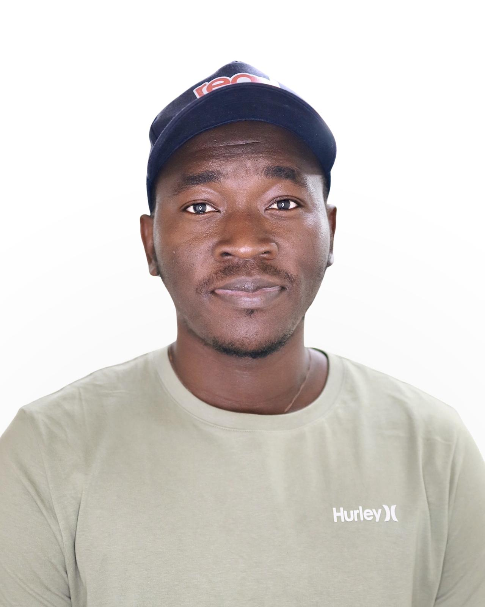

Fig. 0. A model built functorially transforms consistently when the data are transformed.
Recent talk.Categorical Foundations of Machine Learning: An Introduction, Data Science Research Group seminar, RIT, October 2, 2026. Slides

DG
About
From pure mathematics to models that matter.
I am a second-year PhD student in Mathematical Modeling in the School of Mathematics and Statistics at RIT, advised by Prof. Ernest Fokoué, and a member of the Data Science Research Group.
I trained in pure mathematics at the University of Abomey-Calavi in Benin, in statistics for life sciences at ICMPA, and in mathematical sciences at AIMS Rwanda, where my thesis measured the impact of seasonal malaria chemoprevention in Benin. Before starting my PhD, I worked on machine learning for HIV research at the University of Tübingen.
Today my work asks a simple question with a mathematical answer: what structure should a learning system preserve, and what do we gain when it does?
Research interests
Structure first, then computation.
I move between abstract mathematics and working code, and I care about models that stay honest under real constraints: cost, latency, generalization and interpretability.
F : C → D
Category theory for machine learning
Lenses, parameterized maps and functors as a precise language for models, backpropagation and training.
dI/dt = βSI − γI
Infectious disease modeling
Mechanistic and statistical models of malaria and HIV, evaluated on surveillance and sequencing data.
p(θ | x)
Statistical modeling
Interrupted time series, simulation and inference for public health questions with messy data.
𝓕(U)
Biomedical data
Compositional tools, including sheaves, for combining heterogeneous measurements of the same tissue.
∂L/∂θ
Applied machine learning
Tabular foundation models, retrieval-augmented generation and deployed systems built end to end.
x ∈ ℝⁿ
Teaching mathematics
Probability, statistics and calculus at RIT, and tools that make mathematics more accessible in Benin.
Projects
Six projects, one habit of mind.
Each plate is a schematic drawn from the mathematics of its project. They are illustrations, not data.
Fig. 1. Composing lenses: forward passes chain one way, gradients the other.
PhD research, Data Science Research Group
Categorical foundations of machine learning
Machine learning models as morphisms, backpropagation as a functor into a category of lenses, and trainable layers as parameterized lenses. Presented at the group seminar with a from-scratch implementation.
Category theoryLensesBackpropagation
Fig. 2. Interrupted time series: observed cases against the counterfactual trend.
AIMS Rwanda thesis, with the National Malaria Control Program, Benin
Impact of seasonal malaria chemoprevention in Benin
A retrospective evaluation of SMC campaigns using interrupted time series models on national surveillance data.
MalariaTime seriesPublic health
Fig. 3. Long reads of the viral envelope, summarized into features for prediction.
University of Tübingen, with Prof. Nico Pfeifer
Predicting HIV-1 neutralization from envelope sequences
Applied TabPFN, a transformer-based model for tabular data, to predict autologous neutralization status. Manuscript under review.
HIV-1TabPFNSequencing data
Fig. 4. Retrieval-augmented generation with a separate checking step.
Generates curriculum-aligned mathematics exams for Beninese secondary schools, under tight constraints on cost and response time.
RAGLLMsEducation
Fig. 5. Topics recovered from posts, compared across models.
Research paper, in preparation
Civic discourse in Rochester
Unsupervised topic modeling of X/Twitter posts to describe what a city talks about, checking which findings agree across models.
Topic modelsText dataCivic data
Fig. 6. Low sun, tilted panels, and where the shade falls on the crop rows.
Modeling project
Agrivoltaic crop placement in Alaska
A MATLAB pipeline for growing spinach under solar panels: shading geometry, bolting submodels and yield optimization.
OptimizationMATLABAgriculture
Publications
Papers and preprints.
2026
Long-read sequencing reveals HIV-1 envelope correlates of autologous neutralizing antibody responsesF. Hartkopf, A. Robitaille, D. B. Gbaguidi, et al. Under review, EBioMedicine.
2026
Digital traces of community discourse: unsupervised topic modeling of X/Twitter posts in Rochester, NYD. B. Gbaguidi, et al. In preparation.
Talks
Speaking.
Oct 2026
Categorical foundations of machine learning: an introductionData Science Research Group seminar, RIT. Slides